Viagem e Estadia
Vassouras fica no Vale do Café, a 117 km do Rio de Janeiro.
Como chegar
Saindo do centro de Vassouras, a Vila Botané fica no bairro Ponte Funda, na Rua Luiz Francisco de Souza, 555.
Traçar a rotaHospedagens recomendadas
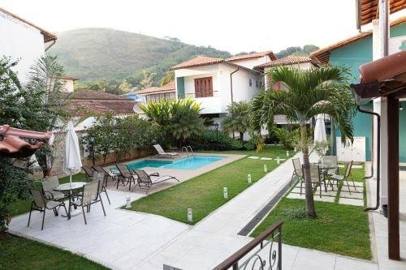
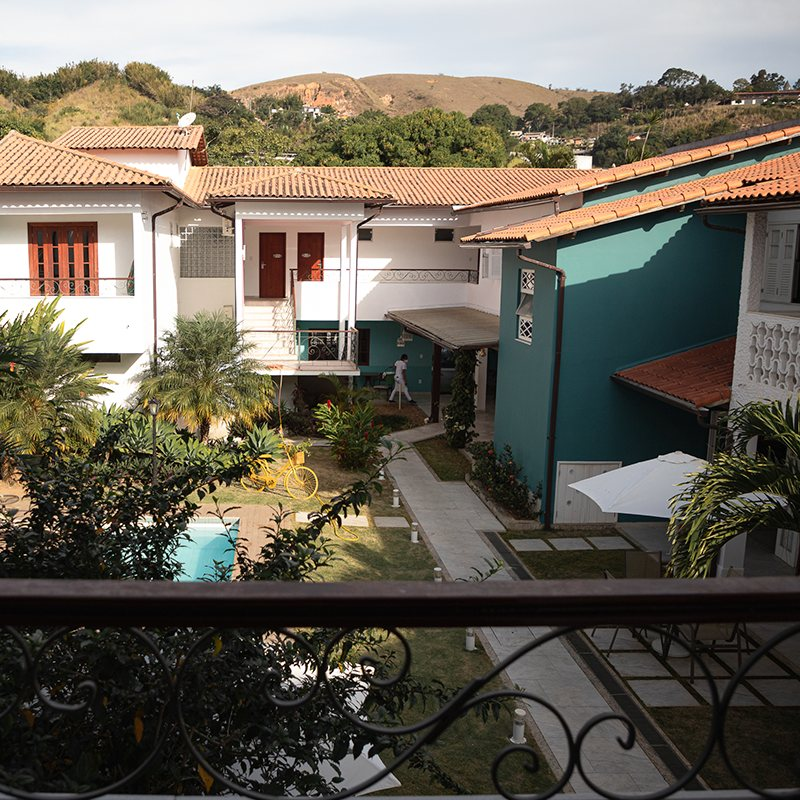
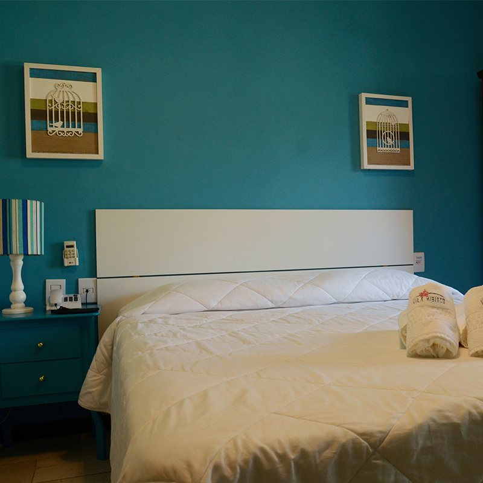
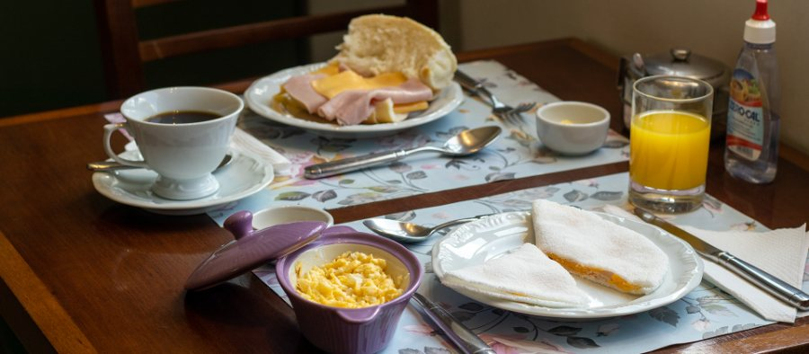
Vila Hibisco
Rua Abreu César, 55
Centro, Vassouras - RJ
(24) 99315-0006
2,9 km da Vila Botané · 4 min de carro
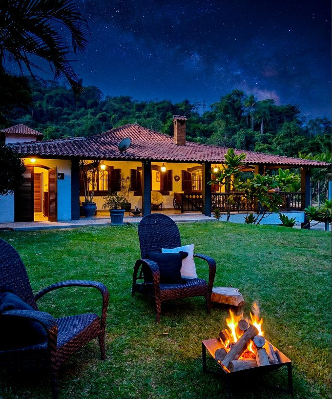
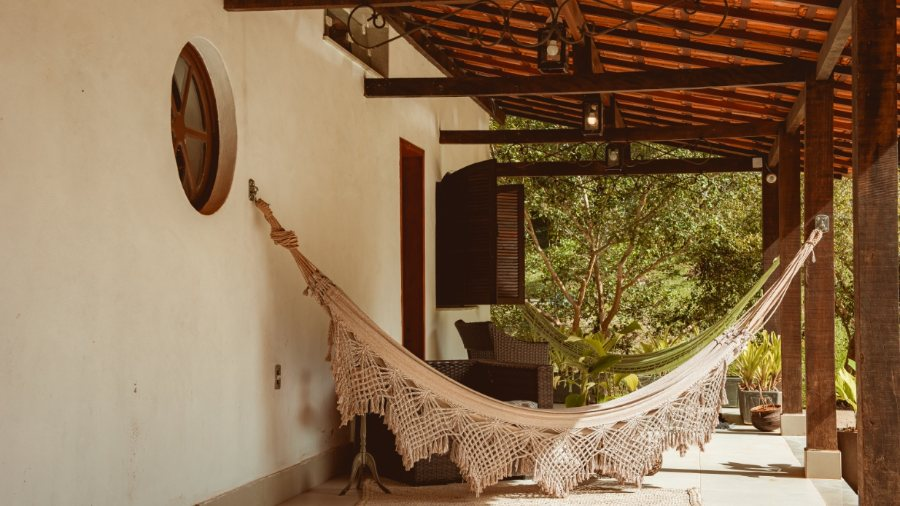
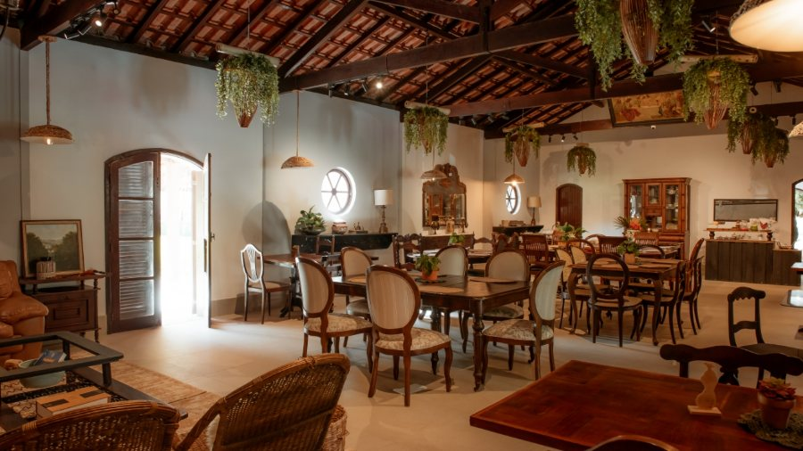
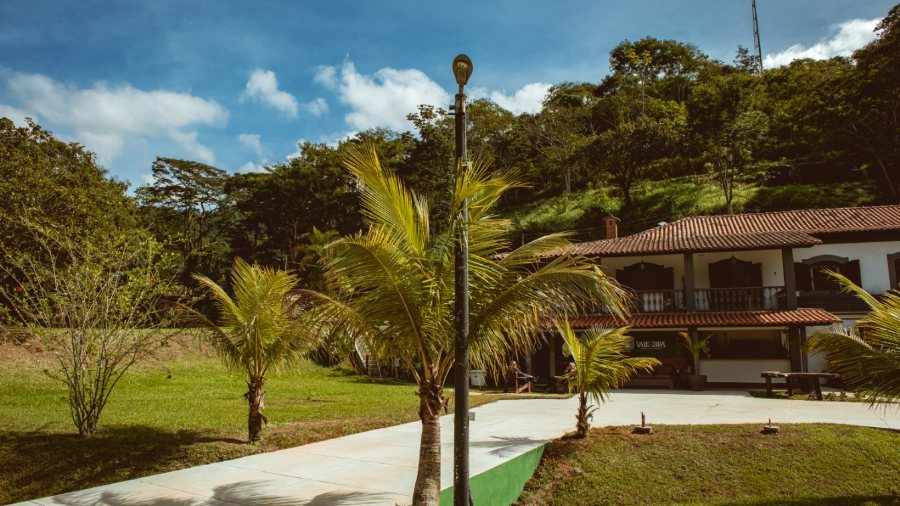
Vale Zirá
Estrada dos Matacães, 4800
RJ-121, km 21, Vassouras - RJ
(24) 99271-2570
8 km da Vila Botané · 10 min de carro
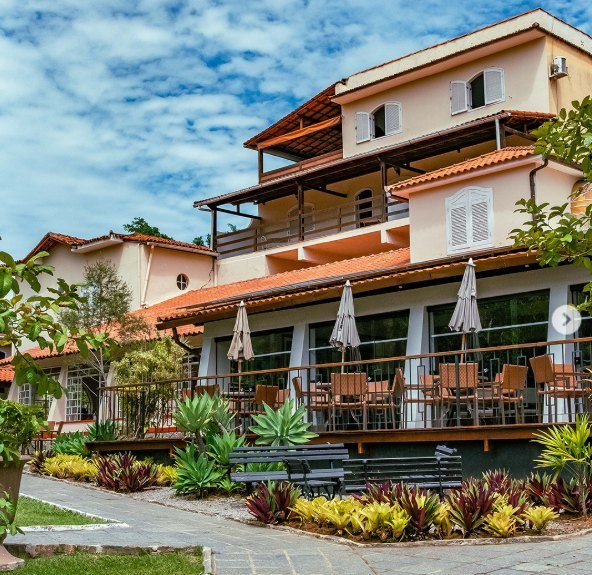
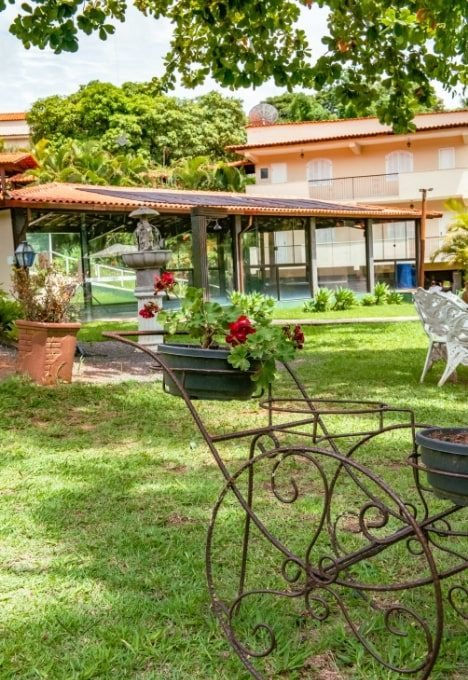
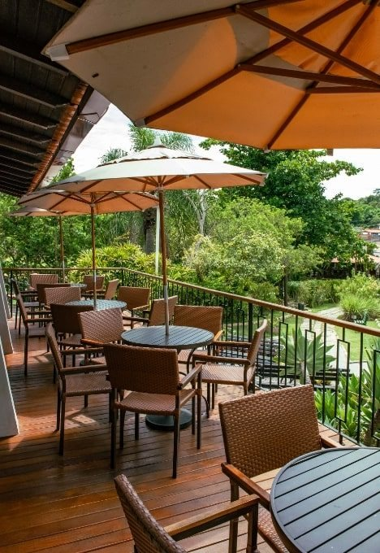
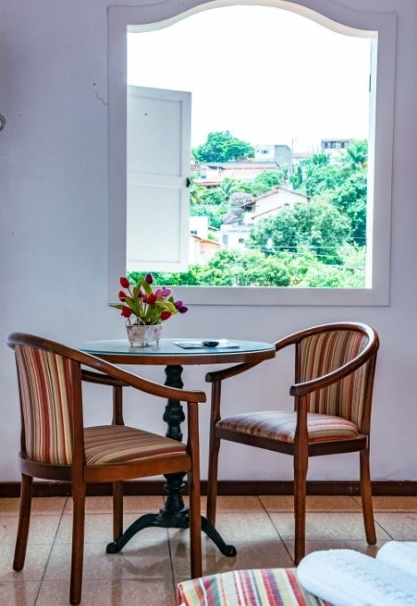
Santa Amália
Av. Sebastião Manoel Furtado, 526
Santa Amália, Vassouras - RJ
(24) 2471-1200
4,1 km da Vila Botané · 5 min de carro
No mapa
Para traçar o trajeto até qualquer uma delas, toque no endereço logo acima.